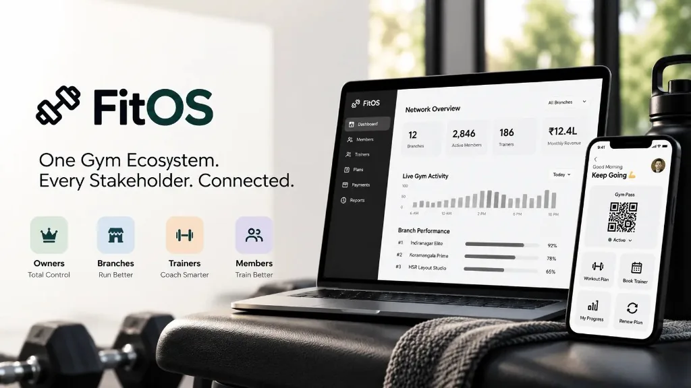

The problem
Multi-branch gym operations were fragmented across WhatsApp, calls, paper and manual coordination.

From WhatsApp, paper registers and disconnected workflows to one connected ecosystem for owners, branches, trainers and members.
Product Design · UX Research · UX Architecture · Ecosystem Design · 0→1 Product · AI-Assisted Development
One gym ecosystem. Different responsibilities. One source of truth.
The problem
Multi-branch gym operations were fragmented across WhatsApp, calls, paper and manual coordination.
The approach
The product
One connected operating system for Owners, Co-Owners, Trainers and Trainees.
Current status
One action should create the right context for every stakeholder who needs it.
As fitness businesses scale from a single local gym into a multi-location enterprise, operations can become fragmented. Founders may end up managing through delayed spreadsheets and WhatsApp messages. Branch partners need localized tools to operate their floor. Trainers may track workouts and client information across notebooks or chat threads. Members may still depend on physical cards and have limited visibility into membership expiry or training progress.
FitOS was created to replace these fragmented workflows with a single, real-time operating system that connects Global Owners, Branch Co-Owners, Trainers and Trainees on one shared operational foundation. Every door scan, membership sale, trainer shift and workout activity can become part of the same connected system.
The initial problem came from a client who operates three gyms. The owner could not be physically present at all three locations, while branch teams required access to the information needed to manage daily operations.
At the time, much of the workflow was happening through WhatsApp + Calls + Paper + Registers + Manual Coordination.
The product opportunity was therefore not simply “Build a gym-management app.” It was: Build a system that allows a growing fitness business to operate when the owner is not physically present.
The problem has four interconnected layers.
The owner needs visibility across locations.
Branch teams need tools to run their individual locations.
Trainers need to manage shifts, clients and workouts.
Trainees need a simple and continuous fitness experience.
How might we connect all four layers without overwhelming users with information that does not belong to their role?
Deloitte India and the Health & Fitness Association estimate India's fitness market at approximately ₹16,200 crore in 2024, with a projection of approximately ₹37,700 crore by 2030. Fitness memberships are projected to increase from 12.3 million in 2024 to around 23.2 million by 2030.
The research also reports that the top 10 Indian cities generated 56% of fitness-market revenue while representing 31% of facilities in 2024.
As the market grows, businesses can also become more distributed across locations → teams → members → transactions → operations. That created the context for FitOS.
I approached FitOS through a combination of primary stakeholder research, product discovery, competitive benchmarking, UX modeling and live product validation.
Understand who is involved, what each role is responsible for and what each role needs.
Translate real operational problems into specific user and business pain points.
Understand what each stakeholder is actually trying to accomplish.
Study existing fitness platforms to understand established patterns, category expectations and gaps.
Identify the important journeys and the moments where one user's action affects another.
Structure information around responsibility, context and access.
Translate research into product decisions and assumptions that can be tested.
Design, prototype and build the operating system.
Observe real users, collect feedback and continue iterating.
The first major research finding was that a gym is not a single-user system. There are four key stakeholder groups.
Owner: Network visibility
Co-Owner: Local control
Trainer: Client context
Trainee: Personal journey
Primary responsibility: Manage the overall fitness business. The owner needs to understand what is happening across locations without being physically present at every branch.
Network-wide visibility · Branch performance · Revenue visibility · Membership status · Trainer allocation · Operational exceptions
Network Executive KPIs · 12-Branch Performance Grid · Branch Drill-Down · Global Member Registry · Staff & Trainer Reallocation · Enterprise Tariff & Plan Manager · Centralized Financial Ledger
Primary responsibility: Run a specific branch.
One of three major operational problems highlighted by research.
One of three major operational problems highlighted by research.
One of three major operational problems highlighted by research.
Local member management, check-in, membership validation, local pricing, trainer monitoring, expenses, branch performance.
Localized Branch KPIs · Front-Desk Turnstile & Manual Check-In Hub · Branch Member Roster · Local Pricing & Tariff Customization · Trainer Duty & Break Monitor · Local Expense & Disbursement Ledger
Primary responsibility: Coach clients and manage floor activity. Needs include shift tracking, client visibility, workout management, session scheduling, client communication and progress information. The research identified administrative overload, limited floor awareness and fragmented workout history as key problems.
Trainer clock-in / clock-out is live. Broader trainer workflows are still being introduced.
Primary responsibility: Manage a personal fitness journey. Needs include easy entry, membership visibility, workout guidance, progress tracking, trainer access and renewal.
Dynamic Digital QR Gym Pass · Membership Status · Interactive Workout Player · Attendance & Streak Tracker · 1-on-1 Coach Booking · Self-Service Membership Renewal & Billing
The important finding was not simply that there are four stakeholders. It was that the same operational event means something different to each role.
For example, a member checks in:
Network attendance increased.
Branch occupancy increased.
My client is on the floor.
I am checked in.
One event → multiple contextual outcomes
The stakeholder research was translated into specific problems and their operational consequences. These problem areas form the basis for the product's stakeholder-specific workflows.
| Problem | Consequence |
|---|---|
| Limited visibility across branches | Delayed decisions |
| Revenue information is fragmented | Difficult to identify exceptions |
| Trainer allocation is unclear | Resource inefficiency |
| Information depends on manual updates | Owner remains dependent on branch communication |
| Problem | Consequence |
|---|---|
| Too much or too little access | Exposure or dependency |
| Manual membership verification | Front-desk friction |
| Manual trainer tracking | Limited accountability |
| Local information is separated from central reporting | Additional coordination |
| Problem | Consequence |
|---|---|
| Manual client communication | Administrative overhead |
| Limited awareness of client arrival | Missed context |
| Fragmented workout history | Poor continuity |
| Separate shift tracking | Operational ambiguity |
| Problem | Consequence |
|---|---|
| Physical membership card | Entry friction |
| Unclear workout routine | Directionless sessions |
| Unexpected membership expiry | Poor experience |
| Dependence on front desk | Reduced self-service |
When I manage multiple branches, I need to understand network performance and identify where attention is needed, so I can make decisions without waiting for individual branch updates.
When I run a branch, I need enough operational control to act independently without accessing information belonging to other locations.
When I manage clients, I need their attendance and workout context in one place, so I can spend more time coaching and less time handling administration.
When I visit the gym, I need to know that my membership is active, what I should do during my workout and how I am progressing.
Before defining the final experience, I studied existing fitness-management products to understand existing solutions, common feature patterns, category expectations, multi-location workflows, member experiences, staff management and coaching workflows.
The benchmark included Mindbody · Glofox · GymMaster · Virtuagym · Zenoti.
| Capability | Mindbody | Glofox | GymMaster | Virtuagym | Zenoti | FitOS |
|---|---|---|---|---|---|---|
| Membership management | ✓ | ✓ | ✓ | ✓ | ✓ | ✓ |
| Billing / payments | ✓ | ✓ | ✓ | ✓ | ✓ | ✓ |
| Check-in / access | ✓ | ✓ | ✓ | ✓ | ✓ | ✓ |
| Member app / portal | ✓ | ✓ | ✓ | ✓ | ✓ | Planned |
| Scheduling / booking | ✓ | ✓ | ✓ | ✓ | ✓ | ✓ |
| Staff management | ✓ | ✓ | ✓ | ✓ | ✓ | ✓ |
| Multi-location management | ✓ | ✓ | ✓ | ✓ | ✓ | ✓ |
| Reporting / analytics | ✓ | ✓ | ✓ | ✓ | ✓ | ✓ |
| Workout / coaching | ✓ | Partial | ✓ | ✓ | ✓ | ✓ |
| Role-based access | ✓ | ✓ | ✓ | ✓ | ✓ | Core model |
| Cross-role operational continuity | Some capabilities | Some capabilities | Some capabilities | Some capabilities | Strong unified operations | Core design focus |
Core gym features are already table stakes.
Multi-location management is already established.
The opportunity was to improve connected operational workflows.
Note: The benchmark compares capabilities publicly described by each vendor. A checkmark indicates that the capability exists in the product offering; it does not imply equal implementation or depth.
Mindbody: membership, scheduling, payments, staffing, reporting, self-check-in and multi-location management. (mindbodyonline.com)
Glofox: memberships, billing, check-in, reporting, staff management and multi-location operations. (glofox.com)
GymMaster: membership, access, payments, bookings, workouts and member experiences. (gymmaster.com)
Virtuagym: business management, coaching, workout experiences and member management. (business.virtuagym.com)
Zenoti: memberships, access, staff, scheduling, analytics and multi-location operations. (zenoti.com)
The competitive landscape showed that many expected fitness-management capabilities already existed. Instead of “What features are missing from the market?” I focused on: How can these operational capabilities work together around real-world events?
Role + Context + Real-Time State
The journey maps revealed where the strongest ecosystem opportunities existed. The three most important flows became Check-In, Membership Renewal, and Trainer → Trainee. These flows demonstrate how a single action can travel through the ecosystem.
This journey connects the Trainee, Trainer, Branch Co-Owner and Global Owner.
Arrives at Indiranagar Elite and scans their Digital QR Pass (or is checked in at the front desk).
Verifies the member's subscription validity and writes a timestamped entry to attendance_logs.
Status flips to “Checked In Today” and their weekly workout streak increments.
The trainee's card lights up with an “On Floor” indicator so the coach can greet and supervise them.
The member appears at the top of the live reception stream, and Live Floor Capacity Meter increments, for example from 42/80 to 43/80.
The enterprise-wide active attendance counter increments in real time on the network command center.
One action is entered once, but becomes useful to four different stakeholders.
Trainee selects a membership renewal tier in their portal, or a Co-Owner enrolls a new walk-in member at the branch desk.
FitOS processes the transaction, creates a record in transactions tagged with branchId, and updates the member's expiryDate and status to Active in members.
Digital QR Pass immediately unlocks, expiry countdown resets, and the payment receipt appears in their billing tab.
Local branch monthly revenue increases by the plan amount, and the member moves from the Expired filter to Active.
Gross Network Revenue and the specific branch's performance card update simultaneously.
A payment is not just a payment. It changes the operational state of the ecosystem.
Trainer arrives at the gym and taps “Clock In” on TrainerDashboard.
The trainer's status changes from Off Duty to On Duty with an active timestamp; Active Trainers on Floor KPI increments.
Trainer opens the Workout Builder, designs a 4-Exercise Upper Body Hypertrophy routine with Sets, Reps and Rest seconds, and assigns it to their trainee.
The new workout appears immediately. As the trainee checks off sets, progress is saved back to the cloud for the trainer to review.
Current adoption: The Clock In / Clock Out portion is currently live. The broader workout and trainee workflow is still being introduced and validated.
After understanding the journeys, I designed the information architecture around responsibility and context. The system is not structured as Admin App + Branch App + Trainer App + Member App.
One ecosystem → multiple contextual experiences
Network context
Branch context
Client + branch context
Personal context
The experience follows a least-privilege model. The product model explicitly separates these levels of access.
| Role | Information scope |
|---|---|
| Global Owner | Entire network |
| Branch Co-Owner | Assigned branch |
| Trainer | Assigned clients and relevant branch responsibilities |
| Trainee | Personal membership, workouts, bookings and billing |
Access should follow responsibility. The objective isn't to hide information arbitrarily. It is to make sure each user receives the information they need, the actions they can take, and the context they can understand.
| Hypothesis | Product response | Current status |
|---|---|---|
| Owners need cross-branch visibility | Network Command Center | Live |
| Branch operators need autonomy | Branch-scoped experience | Live |
| Fragmented operations create manual work | Central operating system | Live |
| Check-in should update multiple stakeholders | Connected check-in | Live |
| Trainers need less administrative effort | Trainer workspace | In adoption |
| Members need clearer workout guidance | Workout Player | Designed / not yet live |
| Membership status should be visible | Digital membership state | Designed / not yet live |
| Engagement should extend beyond billing | Attendance + workout + trainer relationship | In adoption |
| New workflows may create adoption friction | Incremental rollout + validation | Validating |
| Research finding | Design response |
|---|---|
| Owner cannot monitor every branch physically | Network Command Center |
| Branch teams need operational independence | Branch-scoped workspace |
| Information was spread across WhatsApp, calls and paper | Centralized operational system |
| Membership validation creates friction | Integrated membership + check-in |
| Trainer presence needed visibility | Trainer clock-in/out |
| Client context was fragmented | Client-centric trainer workflow |
| Members need workout direction | Structured Workout Player |
| Membership expiry can create surprise | Visible expiry state + renewal |
| Different users need different information | Role-based IA |
| The market already offers many individual features | Focus on connected workflows |
| New workflows require behavioral change | Incremental adoption + live testing |
Owner
Cannot easily tell which branches are overcrowded, underperforming or requiring attention.
FitOS solves it through Network Executive KPIs + 12-Branch Performance Grid + Branch Drill-Down
Unrecorded admissions or expired members can create financial blind spots.
FitOS solves it through Centralized Financial Ledger + Membership Status + Validity-Based Check-In
One branch can have too many available trainers while another needs coverage.
FitOS solves it through Staff & Trainer Reallocation + Active Trainer Visibility
FitOS solves it through Branch-scoped dashboards and branch-level permissions
FitOS solves it through Live check-in feed + manual check-in + membership validity alerts
FitOS solves it through Trainer Clock In / Clock Out + Break Tracking
FitOS solves it through Shift management + client roster + Workout Builder
FitOS solves it through Live “On Floor” client status
FitOS solves it through Structured workouts with exercises, sets, reps, weights and completion states
FitOS solves it through Dynamic QR Gym Pass
FitOS solves it through Interactive Workout Player
FitOS solves it through Visible membership state + expiry countdown + renewal flow
FitOS uses a shared operational state across Branches, Members, Transactions, Attendance, Trainers and Workouts. The product is designed so that when an operational event occurs, the relevant dashboards can reflect the updated state without requiring the user to manually duplicate the information.
Enter once. Use everywhere it matters.
The Owner dashboard is designed around the questions the owner needs to answer. The Owner experience brings these capabilities together in a network-level command center.
Network KPIs
Branch performance
Occupancy, revenue, membership and trainer state
Branch drill-down
Members, trainers, plans and financial operations
What is happening in my branch right now?
The interface prioritizes live floor headcount, check-ins, membership validity, trainer status, local revenue and expenses.
Context is a form of simplification. A user doesn't need everything. They need what they can act on.
Live Clock-in/out In adoption Workout builder and broader trainer workflows
The product supports this through the shift clock, client roster, Workout Builder, session scheduling and communication. Clock-in / clock-out is live. The broader workflow remains under adoption and validation.
The product includes a Digital QR Gym Pass, membership status, Workout Player, attendance, coach booking and renewal workflows. The Trainee experience is still awaiting live adoption.
Xplor Gym's 2025 operator study found that 92% of surveyed UK gym operators used gym-management software and 83% used a member app, yet 30% reported a lack of integration between systems as a technology challenge.
Adding another system is not enough. The systems and workflows need to connect.
FitOS therefore focuses on the connections between Member → Trainer → Branch → Owner rather than treating these as isolated applications.
ABC Fitness's Mid-Year 2026 Wellness Watch reports that in the first half of 2026: New joins decreased 9% year over year; Cancellations increased 8%; Check-ins increased 1%; 67% of members said community was their biggest driver of motivation and accountability.
The member experience needs to support more than access. It should help connect Attendance → Workout → Progress → Trainer → Engagement.
Evidence boundary: This supports the importance of engagement at the industry level. It does not yet demonstrate a retention improvement caused by FitOS.
Mindbody's 2025 State of the Industry research found that 56% of surveyed operators identified personalized outreach as their most effective retention strategy. This reinforced the decision to preserve the trainer/member relationship within FitOS.
The product therefore connects Trainer → Client → Workout → Progress → Communication → Booking.
FitOS has moved from product exploration into actual operational use. Designed and live are not the same thing.
The previous operational environment depended heavily on manual coordination. FitOS introduced a centralized workflow for Owner and Co-Owner operations. Current internal usage and reports indicate a substantial reduction in operational effort and reporting time.
I am deliberately not presenting an exact percentage because the current project evidence does not provide a validated figure suitable for publication.
Early live usage has shown a substantial reduction in manual operational effort and reporting time. Exact improvement is currently being quantified through ongoing measurement.
Next step: Compare previous process time vs. FitOS process time for specific tasks.
The product is currently being tested through real usage and iterative feedback.
Identify which branch needs attention. Measure: task success, time to insight, interpretation accuracy.
Check in a member and verify membership. Measure: completion time, errors, interactions.
Clock in and locate an assigned client. Measure: task success, time-on-task, navigation friction.
Check in and start today's workout. Measure: time to first action, comprehension, completion.
Renew an expiring membership. Measure: discoverability, completion, abandonment.
Test framework: Defined. Real-user feedback: Ongoing. Quantitative results: Still being collected.
The live rollout created an important insight. For Owners and Co-Owners, FitOS replaces existing operational work. For Trainers and Trainees, FitOS introduces new behavior.
Useful does not automatically mean adopted.
For these users, adoption depends on perceived value + effort + onboarding + habit. This is now one of the main product-design questions being explored.
AI was used throughout the project to accelerate exploration and implementation. AI accelerated the process, while product decisions remained grounded in the research, business context and real-user feedback.
Research synthesis · Problem framing · UX analysis · Hypothesis development · Content structuring
Research exploration · Ideation · Alternative product directions · Comparative analysis
AI-assisted experimentation · Product exploration · Technical prototyping
Development · Implementation · Debugging · Iteration
My role: Research → Problem framing → UX decisions → Architecture → Design → Development → Validation
The hardest problems were the relationships between Users → Actions → Information → Decisions.
The value of live data isn't that it is live. It is that the interface explains: What does this mean for me?
Role-based access affects information hierarchy, navigation, cognitive load, decision-making and trust.
Existing platforms already solve many common fitness-management problems. The goal was not to reproduce them. It was to understand the category and identify where FitOS could focus more deeply on connected operational workflows.
The live rollout showed that solving a problem functionally does not automatically create behavior change.
I distinguish between research findings, industry evidence, product evidence, hypotheses and unvalidated outcomes. This keeps the product story credible.
Owner workflows are live · Co-Owner workflows are live · Trainer clock-in/out is live · Real users are using the operational system · Early operational improvement is being observed · Real-user feedback is driving iterations
Indian fitness-market growth · Existing fitness software adoption · Industry-level integration challenges · Importance of engagement · Importance of personalization
Exact percentage of operational time saved · Formal usability scores · Accessibility outcomes · Trainer workflow adoption · Trainee adoption · Retention impact · Member satisfaction · Revenue-leakage reduction
Reduce the effort required to start using the broader trainer experience.
Start with high-value interactions instead of requiring adoption of everything at once.
Measure task success, time, comprehension and friction.
Turn ongoing reviews into measurable and repeatable checks.
Measure the difference between old and new workflows.
Move from “The feature is being used.” to “The feature changed behavior, which produced a measurable operational outcome.”
FitOS evolved from a real operational problem faced by a three-location gym owner into a connected operating system for multi-branch fitness businesses.
The product now provides network visibility for Owners, branch-level control for Co-Owners, live trainer attendance tracking, structured Trainer workflows, a designed Trainee experience, connected operational journeys, real-user feedback and continuous product iteration.
The strongest outcome isn't the number of features. It is how the features work together.
One event. One source of truth. The right context for every stakeholder.
FitOS was designed around this principle. The project ultimately changed my perspective on product design:
Good product design isn't always about simplifying an individual screen. Sometimes it is about simplifying the relationship between people, information and decisions.
India Fitness Market Report 2025 — Market size, growth projections, membership growth, market concentration and technology trends.
Mid-Year 2026 Wellness Watch — Member engagement, check-ins, new joins, cancellations, community and retention-related signals.
2025 State of the Industry Report — Personalization, retention and fitness-industry technology trends.
UK Gym Operator Insights Report 2025 — Technology adoption and integration challenges among gym operators.
Business management, scheduling, payments, staff management, reporting, check-in and multi-location capabilities.
Memberships, billing, check-in, staff, reporting, member app and multi-location management.
Business management, coaching, workouts, progress and member experiences.
Memberships, staff, scheduling, access, analytics and multi-location operations.